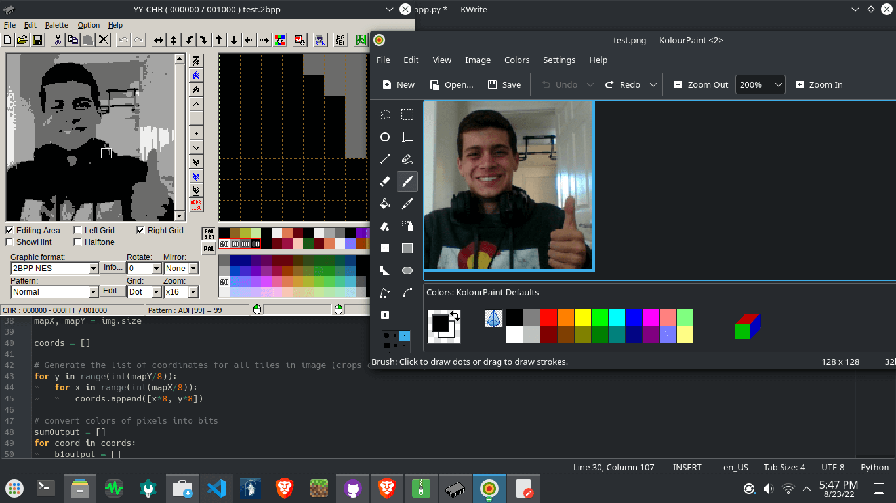

Hello! üëã Welcome to my page!

I'm Preston Corless! It is nice to meet you!
I like to create games using HTML5 and I also tinker with NES assembly.
Here I will demonstrate some coding projects that I make.
You'll want to check out my games or maybe my coding challenges. Also, you can find a lot of other cool stuff from me on GitHub! You can learn more about me here!
19 September 2022: New website???
Here is something that has been in the works for over two months: A whole new web site for me to showcase the cool stuff I made! I am very excited to present it to you guys! Hope you enjoy! Try clicking on that sun icon in the top corner of the page to activate dark mode!
23 August 2022: png-to-2bpp
Today I worked quite a bit on an NES assembly tool: a png-to-2bpp converter, written in Python! I am not particularly familiar with Python, so I think it has been a good challenge so far!
- As of now it can convert any .png into an NES-compatible .2bpp file, using the brightness of pixels to determine between four different palette color slots, and of course writing that image data in a way the NES can understand.
- This is not necessarily a color depth reducer or color filter. It actually rearranges the graphics data into the NES's two-layered 8x8 tile format. The example shown here is somewhat outside the scope of the project (it was meant for sprite sheets, not whole images), but is still a cool demo.
- This tool may come with my SMB disassembly modernization project, depending on its practicality.

Me in 2-bits-per-pixel!